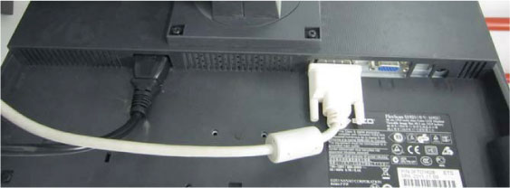
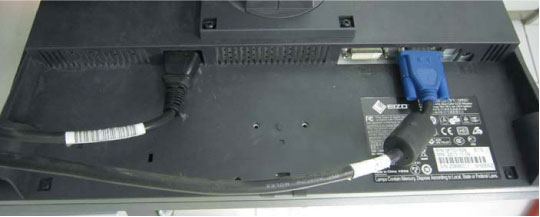

Scan Monitor
Video cable from Console Host DP0 to monitor DVI
Power cable from Console AC Box J10
Route through the cable keeper
Illustration 2: Scan Monitor Connections

Image Monitor
Video cable from Console Host DVI-I 0 to monitor D-SUB
Power Cable from Console AC Box J9
Route through the cable keeper
Illustration 3: Image Monitor Connection
